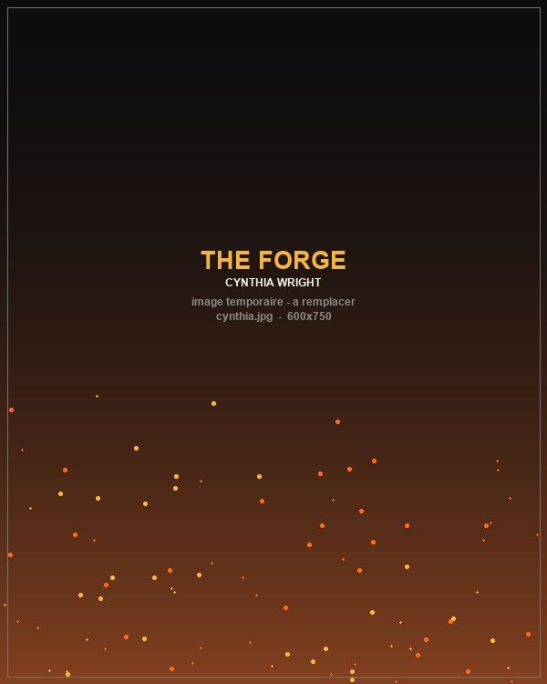
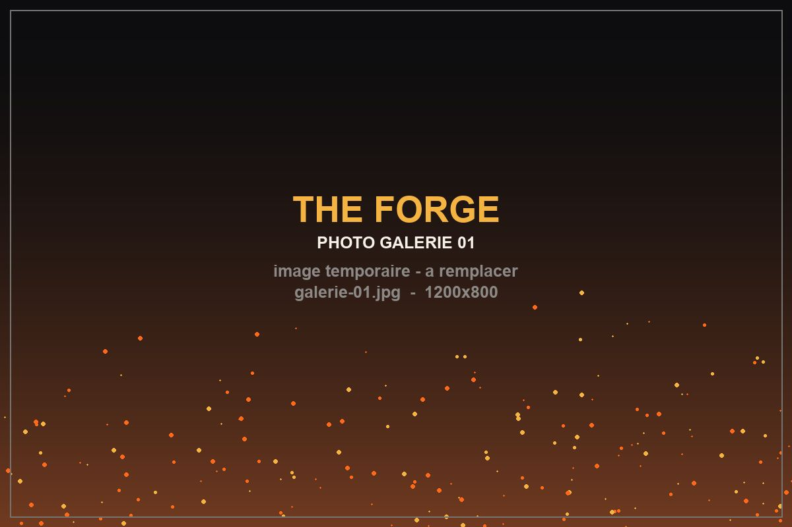
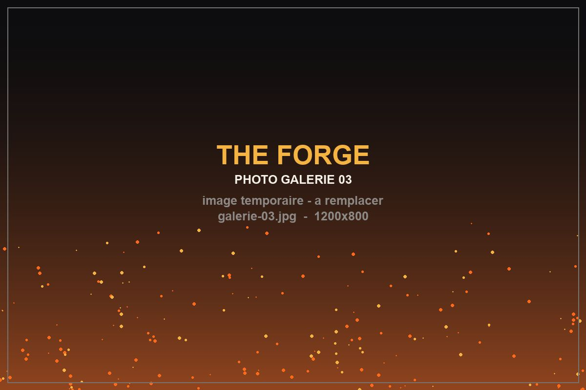
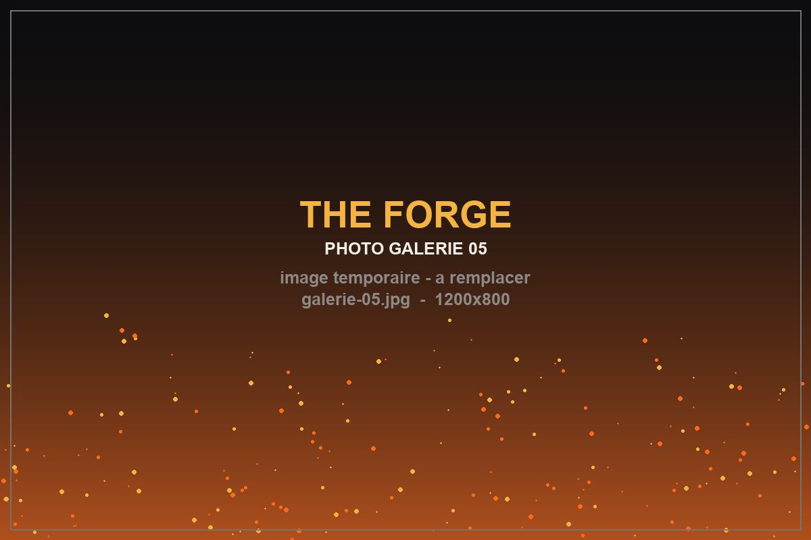

Le mentorat
Personne ne devient un homme tout seul : il faut quelqu'un devant soi.
Kendrick Brothers · 2024
Le fer aiguise le fer
À 19 ans, Isaiah Wright n'a ni travail, ni projet, ni direction. Un mentor inattendu va tout changer.
125
minutes de film
40,4 M$
au box-office
2024
année de sortie
9e
film des Kendrick
Un jeune homme à la dérive. Un mentor qui refuse de le lâcher.

À Charlotte, en Caroline du Nord, Isaiah Wright a 19 ans et le diplôme du lycée en poche depuis un an. Depuis, plus rien : pas d'études, pas de travail, pas de plan. Ses journées se résument au terrain de basket et à la manette.
Sa mère, Cynthia, l'élève seule et voit son fils s'enliser. Elle finit par lui poser un ultimatum : trouver un emploi sous un mois, ou quitter la maison.
Isaiah décroche un poste chez Moore Fitness. Ce qu'il ignore, c'est que son patron, Joshua Moore, ne recrute pas seulement des employés : il investit dans des hommes.
Joshua l'introduit dans « The Forge », un groupe d'hommes qui se retrouvent pour se former, se corriger et grandir ensemble. Le principe est simple et brutal : comme le métal, un homme ne prend sa forme qu'au feu et sous le marteau.
« Le fer aiguise le fer, ainsi un homme aiguise un autre homme. »
Proverbes 27:17
Six idées qui traversent le récit du début à la fin.
Personne ne devient un homme tout seul : il faut quelqu'un devant soi.
Les rêves ne valent rien sans habitudes quotidiennes.
Refuser de pardonner, c'est se laisser enchaîner à celui qui nous a blessé.
Le combat le plus décisif se livre parfois hors du champ de bataille.
Grandir, c'est répondre de ses actes sans chercher d'excuse.
La manière dont on travaille révèle qui on est vraiment.
Six visages, une même forge.

Aspen Kennedy · Le héros
Sorti du lycée sans projet, il vit chez sa mère et évite soigneusement toute responsabilité. Fier, doué au basket, il est surtout terrifié à l'idée d'échouer.
« Je ne savais même pas qu'on pouvait décider de qui on allait devenir. »

Cameron Arnett · Le mentor
Président de Moore Fitness. Chef d'entreprise exigeant et bienveillant, il ne se contente pas d'embaucher : il forme. Créateur du groupe « The Forge ».
« Je ne cherche pas des employés. Je cherche des hommes prêts à être forgés. »

Priscilla C. Shirer · La mère
Elle élève Isaiah seule. Épuisée de voir son fils gâcher son potentiel, elle passe de la colère à la prière — et découvre que c'est là que se gagne le vrai combat.
« Je ne peux pas te forcer à grandir. Mais je ne cesserai pas de prier pour toi. »
Remplace REMPLACE_PAR_ID par le vrai identifiant YouTube
(voir ressources/guide-medias.md).

1:47

4:12
Des images du film et du tournage.






Toutes les données du film.
| Réalisateur | Alex Kendrick |
|---|---|
| Scénario | Alex & Stephen Kendrick |
| Producteur | Stephen Kendrick |
| Photographie | Bob Scott |
| Musique | Zachary Leffew |
| Durée | 125 minutes (2 h 05) |
| Sortie salles | 23 août 2024 |
| Sortie Netflix | 21 décembre 2024 |
| Budget | 5 000 000 $ |
| Box-office | 40 400 000 $ |
| Distributeur | Sony Pictures Releasing |
| Tournage | Albany, Géorgie — juin/juillet 2023 |